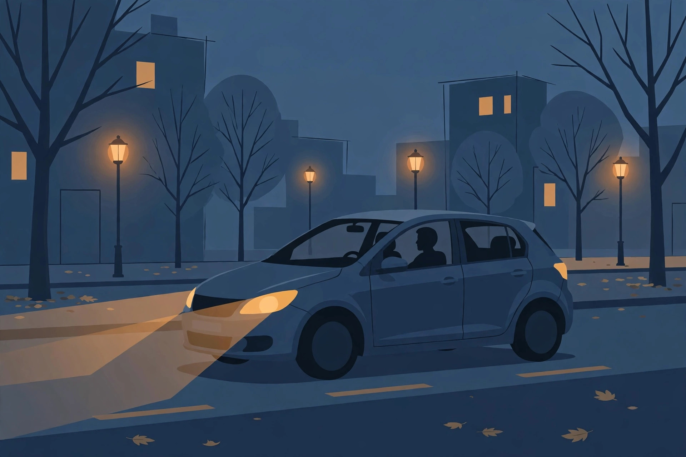

Drowsy driving in the week after fall back: recognizing the risk window

One figure opens this topic, and it deserves care. An insurer summary of the research cites a University of Colorado study finding that fatal crashes increased 6 percent in the week following the end of daylight saving time. Six percent is not a dramatic number, and that is exactly why it is believable, and why the week after fall back deserves a plan rather than a shrug. The myth underneath most coverage is that an extra hour of sleep makes this the safe week. The evidence describes something narrower and more useful: a specific window, on specific parts of the day, where a disrupted body clock and a darker commute overlap.
The fall back myth: an extra hour does not mean a rested week
The extra hour arrives once, on one night. What follows it is a body clock that wakes and flags at the old times while the social clock, work, school, the commute, runs an hour off from where your alertness expects to be. Sleep guidance for the clock change treats the whole week as an adjustment period for a reason. Planning for one good night and six ordinary ones misreads the shape of the week. The drivers at risk are not only the ones who slept badly on Saturday night. They include everyone whose Monday to Friday runs on a rhythm their body has not caught up with yet.
What the studies actually say about the fall week
Much of the alarming research on clock changes is about spring forward, when an hour is lost. Keep the fall evidence separate, and grade what remains honestly.
| Finding | Source and scope | How much weight it carries |
|---|---|---|
| Fatal crashes up 6 percent in the week after daylight saving time ends | University of Colorado study, as cited in an insurer summary of fall research | Fall specific, which is rare in this literature; a summary citation, not the study itself |
| About one in six fatal crashes involves a drowsy driver | AAA Foundation estimate, reported by the American Academy of Sleep Medicine education site | All year figure for drowsy driving generally, not a fall back figure |
| 41 percent of adults in the United States have felt so sleepy while driving that it affected safe driving | 2025 AASM survey | Self reported, United States; shows how common the state is, not a crash rate |
| After 17 to 19 hours without sleep, performance equals or worsens compared with a blood alcohol concentration of 0.05 percent | Reported by the AASM education site | A laboratory comparison for long wakefulness, included to calibrate what drowsiness does, not to describe a normal commute |
That grading exercise is the original work in this article, and it changes the conclusion. The fall specific signal is modest and real. The general drowsiness signal is large and applies all year. Fall back week sits where the two overlap: a modest seasonal push applied to a risk that was never small. All of the figures above are from United States sources; no Canadian fall back crash statistic was found in the research for this article, and none is invented here.
The risk window by time of day
Early morning. Your body clock still expects the old wake time, which now reads an hour earlier on the clock. The first drives of the week happen in a groggy trough that the alarm clock created and willpower does not repeal.
The evening commute. This is the window the fall research names most clearly: evening darkness, headlight glare, and fatigue combine on the commute home. Sunset moved an hour earlier by decree, your drive home did not, so a route you have driven in daylight since spring is suddenly a night drive, in traffic, at the end of a workday your body thinks is an hour longer.
Night driving generally. AAA reporting puts 50 percent of crashes at night, and notes that headlight lenses commonly deteriorate by year five of a vehicle's life. Neither fact is about the clock change. Both describe the conditions the clock change pushes more of your driving into, which is why a headlight check belongs in the same week as a sleep plan.
Signs you are too drowsy, while you are driving
The decision framework for this article is a rule you set before the week starts, because a drowsy driver is a poor judge of their own drowsiness in the moment. Decide in advance that any of these signs ends the drive at the next safe place to stop:
- You cannot remember the last stretch of road you just drove.
- Keeping your eyes focused takes visible effort, or your eyelids keep closing.
- You drift within your lane, or correct the steering in small jerks.
- You miss a sign, a signal, or an exit you know well.
- Yawning repeats and your head nods.
These are the warning signs safety guidance lists for drowsy driving generally, applied here to the week when they are most likely to appear on an ordinary commute. The rule has no exceptions for being close to home. Proximity is not alertness.
Countermeasures: what the sources support
AAA guidance recommends at least seven hours of sleep before driving, and its foundation research is blunt about the alternative: drivers who slept fewer than five hours have a crash risk comparable to drunk driving, and missing just one to two hours of sleep can nearly double crash risk. Against numbers like that, the honest countermeasure list is short. Sleep the hours, before the drive, as many nights of the week as the week allows. If drowsiness signs appear anyway, stop driving and rest; the sources support rest and sleep, and they do not offer a technique that makes continuing to drive while drowsy safe. Coffee, cold air, and loud music appear in folklore, not in the sourced guidance used for this article, and none of them changes the sleep numbers above. Treat them the way you would treat any unlisted remedy: fine as comfort, worthless as a plan.
The week plan for commuters
- Before the change weekend, set the pull over rule above and tell a passenger or a family member it exists.
- Protect sleep first on the nights before the longest commute days, using the seven hour target from the guidance.
- Clean or check your headlights that week; the evening commute is now a night drive, and lens condition is part of it.
- For the first evenings, leave extra following distance and expect other drivers to be adjusting too; the risk window applies to the whole road, not only to you.
- If a sign from the list appears, stop at the next safe place. Arriving late is the designed outcome of this plan when the alternative is arriving drowsy.
What success looks like: a week of commutes where the plan, not your alertness in the moment, made the decisions, and where any drowsy episode ended in a stopped car rather than a continued drive.
When to see a professional
Talk to a qualified health professional if daytime sleepiness persists beyond the adjustment week, if you fall asleep unintentionally during the day, or if a partner reports loud snoring or pauses in breathing at night. Drowsiness that does not lift is a health question, not a willpower question, and it outlasts any clock change.
General information only. This article is general information about drowsy driving risk and sleep routines. It is not medical advice and it does not assess your fitness to drive. If you are too drowsy to drive safely, do not drive.
— Maya Chen, Health & Wellness Writer